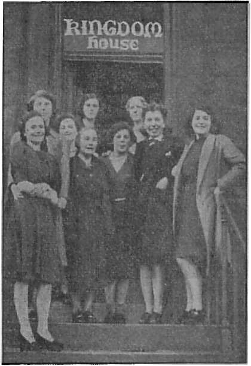

Where the Vatican Rules
Canada and Germany under the Pope
From a Lawyer to a Lawyer
Holy Spirit
. . . - —
The Flag Salute Case in Retrospect
The Instinctive and Reasoning Powers of Birds
Five Cents a Copy Vol. XXIII No. 582 • >1.25 In Canada and Published Every
One Dollar a Year January 7, 1942 * Foreign Countries Other Wednesday
Where the Vatican Rules (Part 2)
Draftees Retained Indefinitely
Nazism Flourishes in Moose Jaw
The Little Pope’s Shop in Canada
The New Government
Counsel by J. F. Rutherford
Italy — Mussolini a Well-hated Man
Mexico, Bahamas, Greenland, Iceland
Michigan — Undermining Public Schools
Motoring — Deer as a Menace to Autos 25
U. S. Occupation of Dutch Guiana
The Flag Salute Case in Retrospect
British Comment
Contrary Teachings on Image Worship
Instinctive and Reasoning Powers of Birds
Published every other Wednesday by WATCHTOWER BIBLE AND TRACT SOCIETY, INC.
117 Adams St., Brooklyn, N. Y., U. S. A.
Editor Clayton J. Woodworth
Business Manager Nathan H. Knorr
Five Cents a Copy
$1 a year in the United States $1.25 to Canada and all other countries
NOTICE TO SUBSCRIBERS
Remittances: For your own safety, remit by postal or express money order. When coin or currency is lost in the ordinary mails, there is no redress. Remittances from countries other than those named below may be made to the Brooklyn office, but only by International postal money order.
Receipt of a new or renewal subscription will be acknowledged only when requested. Notice of Expiration is sent with the journal one month before subscription expires. Please renew promptly to avoid loss of copies. Send change of address direct to us rather than to the post office.. Your request should reach us at least two weeks before the date of issue with which it is to take effect. Send your old as well as the new address. Copies will not be forwarded by the post office to your new address unless extra postage is provided by you.
Published also in Afrikaans, Bohemian, Danish, Dutch, Finnish, French, German, Greek, Hungarian, Japanese, Norwegian, Polish, Portuguese, Spanish, Swedish, Ukrainian; also special Australian edition in English.
OFFICES FOR OTHER COUNTRIES
England 34 Craven Terrace, London, W. 2
Canada 40 Irwin Avenue, Toronto 5, Ontario
Australia %7 Beresford Road, Strathfield, N.S.W. South Africa 623 Boston House, Cape Town
Sintered as second-class matter at Brooklyn, N. Y., under the Act of March 3, 1879.
Canada and Newfoundland
Plenty of Dionne Money
♦ As a frog or a turtle can smell water in the distance and make a more or less straight path to it, so a priest can smell money wherever it is to be found, and the itch that he has to get it is worse than that caused by poison ivy. Now word comes from the mother of the Dionne quintuplets that she is hoping that “they may all develop vocations for the religious life”. Why, sure! And when they develop those vocations the priests will get it all. And it now runs into the millions.
Grandma Carroll Is 114
♦ Grandma Carroll, of North River, Newfoundland, has lived under seven British sovereigns and twenty-eight American presidents. She remembers the coronation of Queen Victoria and the death of Napoleon on St. Helena. Her oldest boy is 92, and her youngest daughter, with whom she lives, is 68. She has 109 grandchildren, 148 great-grandchildren, and 10 great-great-grandchildren. She is quite well, thank you, and able to walk about unaided.
Defilement of Blood
♦ Defilement of blood, artificially induced, continues to make business for the undertakers in Canada. Toronto lost an insurance executive two days after receiving an injection of inorganic equivalent for Vitamin B; while at Wiarton an eight-year-old died in less than three-quarters of an hour after an injection of anti-tetanus serum given to him as a precaution following the dressing of a slight wound in his forehead.
No Flesh Would Be Saved
♦ If every bullet made, in Canada in two years of wartime found its way into a human heart, not a soul would be left alive on the planet.
“And in His name shall the nations hope.”—Matthew 12:21, A.R.V.
Volume XXIII Brooklyn, N. Y., Wednesday, January 7, 1942 Number 582
Where the Vatican Rules
(In Two Parts—Part 2)
IN Canada it is now a crime even to possess publications of the Watch Tower Bible and Tract Society. The law enforcement officers have been transformed into agents of the Inquisition, and no more may men lay their heads upon their pillows with free conscience, but are now fretted by anxiety as to when the marauders of the pope will invade their homes and tear them apart in an eager-nostriled search after “heresy”. Meanwhile Canada is ostensibly engaged in a war to destroy the foes of freedom.
Trials of Jehovah’s witnesses are reported all over Canada; but those who serve the Lord are not dismayed. They know that He is faithful who promised, and that in due time He will avenge the injustices and abuse heaped upon them. —Luke 18: 7, 8.
Meanwhile the destruction of rights goes on at a terrific pace. Houses are rifled to find a book or literature proscribed by the pope, among which is the Bible. The chief Protestant preacher of Toronto, Mr. T. T. Shields, unfriendly critic of Jehovah’s witnesses, has been barred from radio and threatened on account of his protest against Catholic abuses. Just how bold are the agents of the Hierarchy is revealed by the following news dispatch:
“Ottawa Finds Illegal Motive. Reason Use of Mails Banned to Bible House. Mulock Explains. Ottawa, Oct. 2 (CP).—Use of the mails has been forbidden the North Toronto Bible House following Justice Department [Lapointe] opinion that literature sent out by it was published for an illegal purpose, Postmaster-General Mulock announced today.
Colonel Mulock said he answered by telegram today a protest on this ruling received from Rev. E. J. Taylor, proprietor of the Bible House.
Mr. Taylor was informed that if he gave written assurance he would discontinue use of the mails for distribution of pamphlets held to be published for an illegal purpose, full mailing privileges would be restored, Colonel Mulock said.
Colonel Mulock said the postoffice inspection department directed attention to complaints received about the use of the mails for distribution of ‘certain literature’ bearing the names and addresses of “The North Toronto Bible House, 2721 Yonge Street, Toronto, Ontario, Canada,” and “The Protestant Book House, Station B,' Box 125, Toledo, Ohio, U. S. A.”
“In view of the nature of the pamphlets, the officials of the department reached the decision that the Department of Justice [Lapointe] should be consulted,” Colonel Mulock said.
(It was learned in Toronto that the pamphlets denied the use of the mails were denunciatory of the Roman Catholic Church. It was pointed out this was considered an illegal purpose within the meaning of Regulation 205 of the Canada Official Guide. “All the pamphlets denounce the Roman Catholic Church,” The Globe and Mail was informed.) [The Globe and Mad, Toronto, Friday, October 3, 1941]
Canada law thus makes criticism of the Roman Catholic Church illegal. This differs from the medieval courts of heresy only in the degree of punishment. Then the victim who advocated “pestilential error” was tortured and burned to death. But Canada may come to that too. Jehovah’s witnesses have been shot and killed in Quebec, and thousands of books burned by public order. Lapointe1 stands ready to go any lengths to please his masters in Quebec. Our Northern Neighbor it is well for those to ponder who want the pope to rule.
The Nazi Brand of Papal Rule
Out of Germany comes propaganda. Deception and murder is lauded and criminals made national heroes. Since all the bishops of Germany commend the Nazi methods to the skies, and Hitler is the ally of the pope, the conditions there must be taken as pleasing to the pontiff. The howl about Catholic persecution is intended for American consumption only. Also note these words by a friend of the Papacy: “The [Catholic] church has not condemned Nazism as an anti-religious movement.” (Herbert L. Matthews, New York Times correspondent, admirer of the Vatican, dispatch of September 20, 1941, Buffalo Evening News)
Some of the deeds of the Nazi section of the “abomination that maketh desolate” are exposed by Clara Leiser and Edith Roper’s Nazi-judiciary mockery entitled “Skeleton of Justice”. The New York Law Journal of October 17, 1941, reviews this book at great length, and from this review excerpts are quoted below.
This book must be placed in the top listings of exposes about Germany. It is unique in that it is an expose not of men, politics, or the army, but of the judiciary. The fiber of a nation’s structure is so interwoven that this revelation about the judicial processes gives clarity and roundness to all the other interpretations. It explains the phenomenon whose impact has been as stunning as it has been unbelievable.
One can only hope in the words of Pascal that “Justice and power will be brought together so that whatever is just will be powerful, and whatever is powerful may be just.” —Louis Nizer.
Clara Leiser will be remembered as writing many sympathetic articles about Jehovah’s witnesses in the Manchester Guardian and elsewhere. Just how such a factual account was ever permitted to leave Germany is revealed by the reviewer :
Skeleton of Justice, by Edith Roper and Clara Leiser; E. P. Dutton & Co., Inc., N. Y.; pp. 346. $3.
One of the authors of this book, Edith Roper, was the only court correspondent of the Deutsche Allgemeine Zeitung and the only Berlin court correspondent for the Frank-furtur Zeitung from 1936 to 1939.
Under the pretext of writing a book to reveal the progress of German jurisprudence, she obtained leave of absence to Switzerland for six months. She removed from the country her notes and evidence, and escaped to France and then to America. From her personal observations and data come the first documented, authoritative report of the judicial system as it now operates in Nazi Germany.
It is unfortunate that this detailed account should not have been had earlier, for the perversion of domestic justice and the substitution of judicial anarchy were the inevitable precursors of Nazi international lawlessness. One is merely the extension of the other. If sooner published, perhaps this story might have registered on the barometer of foreign relations a still clearer warning of the fury of the approaching storm.
The lies of the Nazis are so brazen that they acquire credibility because we cannot conceive of such gross mendacity. Conversely, the truths about the Nazis are so bizarre that we require documentation lest they appear to be the inventions of prejudice. This book supplies reliable, concrete evidence for its every revelation.
The corruption of the judicial system in Germany is complete. The Secretary of State of the German Ministry of Justice is in command of all judicial functionaries, He drafts new laws and decrees, and directs the entire administration of justice. Hitler selected for this post Dr. Roland Freisler, who had been convicted several times before 1933 for general fraud, making false statements under oath, and aiding fraudulent bankruptcies. In 1928, after serving a prison sentence, the Chamber of Lawyers had expelled him. It is Dr. Freisler who boldly pronounces the doctrine that objective justice in any individual case is unimportant. Only the welfare and the security of the state matter. A judge who does not obey this supreme edict must be severely punished. Thus, the doctrine is promulgated of the “royal” judge who is unfettered by laws. His sole duty is to the state. The state’s witnesses are frequently the Gestapo, and to disbelieve the Gestapo is to cast aspersion upon the state. A judge is in danger of his life should he fail to heed the government’s accusation. Thousands of judges now languish in concentration camps.
A judge must not decide. Like a soldier, he must obey. The Ministry of Propaganda provides the instructions. Ptess releases are prepared in advance of the trial. The evidence does not matter. Certain impressions must be created for public consumption. This theory operates likewise to exclude reports of certain trials. No contest involving a National Socialist organization, or a member of the party, if membership is a factor in the case, embezzlement of party funds, or aspersions, upon party members, may be mentioned. The list of “offensive” trials is so long that very few trials are ever reported. Thus, Dr. Doerner, head of the Press Bureau in the Ministry of Justice, by exclusion and distorted inclusion, uses the courts as a mere adjunct of the propaganda machinery.
Note the “high” requirements for official Nazi appointment:
Chief of all German court physicians and expert witnesses, and at the same time head of the Institute for Medical Jurisprudence, is Dr. Mueller Hess. Before 1933 Dr. Hess was dismissed by the University of Bonn as unfit. By the inverted standards of Hitlerism this qualified him for one of the most important positions in German jurisprudence. Dr. Hess and his chosen associates find defendants sane or insane in accordance with the desire of the Gestapo and Ministry of Propaganda. Consequently, any defendant is at the mercy of the state; formal testimony is supplied by its agents irrespective of truth.
“Killed in battle” is often an expression of Gestapo “justice”:
Occasionally the prominence of the victim requires more subtle tactics. Thus General von Fritsch, who refused to permit Heinrich Himmler to obtain weapons for the S. S. from the army, was tried before a special court. The charge was homosexuality. The witnesses, who were prepared by -the Gestapo, broke down and the General Staff was powerful enough to prevent the disregard of the testimony. He was neither found guilty nor acquitted, but declared to be “rehabilitated”. The wishes of the Gestapo were, however, fully complied with during the Polish campaign when General von Fritsch was declared to have been killed in battle.
Not only political opponents, but party workers who must be done away with, are murdered in deepest silence and secrecy. The war offers a splendid opportunity. Prince Rupprecht of Bavaria, candidate of the monarchists, has also died a “hero’s death” in the war.
There is competition among official and unofficial thieves:
The complications of official chicanery are varied. It was a common practice for thieves to pose as Gestapo agents and loot Jewish homes. Rarely were complaints made by its victims, for to challenge the state’s agents was to invite greater disaster. The terror spread to “Aryan” homes, where the fear for the S. A. was no less. The Gestapo became jealous of the encroachment upon its domain and reserved to itself this species of extortion. Private thieves were then punished in several exemplary trials. Plunder is now duly official.
Horst Wessel, “enshrined hero,” was the procurer for a bawdyhouse:
There is a complete disclosure of the Horst Wessel case. He was a procurer who was killed in 1930 by one Ali Hoehler in a brawl over a prostitute. Hoehler was convicted for manslaughter by the pre-Hitler courts. Four years later the Nazis, after killing Hoehler in a concentration camp, retried the case. The incident was distorted as a Communist attack on Horst Wessel, who had in the early days assisted Dr. Goebbels in organizing the group
of hagglers later to come to such great power. Three Communists were dragged from a concentration camp and convicted. Horst Wessel was made a national hero. The inn where he was murdered became a shrine. The Gestapo has had a busy time, however, preventing disclosures of Horst Wessel’s origin which comes cropping up at trials of his degenerate intimates. It is fitting irony that the Nazis’ patriotic hymn should be dedicated to this disreputable pimp.
The funnier .the joke, the more serious the crime:
If humor is to be found at all in so great a human tragedy as the Nazi regime, it is in its humorlessness. There is a joke court, which punishes defendants for every jest against the state. Prosecutor and judge solemnly weigh the effectiveness of the joke, and the punishment is severer if it is funny, and therefore likely to be repeated. Every harmless bit of nonsense becomes a serious matter of state.
One presiding judge did not hesitate to impart to his friends the choicest of the offenses of his gruelling day, and one can imagine his embarrassment when a defendant actually traced his illegal humor to an intimate of the judge and thus to the judge himself.
The Devil’s pupils are on the rampage (John 8:44):
That the corruption of the judicial system and its moral basis carries within itself the potentialities of self-destruction cannot be doubted. Immediately prior to the war there was an unprecedented murder epidemic. The police were helpless. Less than 5 percent of the crimes were solved. The murderers were chiefly1 young boys, and they killed without purpose. Neither money, property, revenge nor other customary motives existed.
The will to destroy was without direction. Destruction by the state had bred destructiveness in turn. Having been trained for six years to worship power, force and ruthlessness, the youth of Germany reacted by demonstrations of their fitness.
Those who were apprehended revealed the same strange psychological motivations. Whether callous or naive, it was absolute nihilism which made murder attractive. Their victims were unknown to them. Their crimes were deliberate and calculated. They sought to satisfy their Own lust for power by killing. The murderers came chiefly from economically substantial families of good education. They had, however, received the training that power is arbitrary and unrestricted by moral considerations. A best friend may be murdered and a worst enemy may be made a friend. Yesterday Russia was our comrade. Today she is to be slaughtered. Yesterday a treaty was made. Today it is to be disregarded. The boys of Germany attempt to anticipate their adult status by arrogating to themselves the powers they admire.
The war released these cold-blooded energies—the thrill of power by killing. Undoubtedly this acounts for the unanimous reports of the war correspondents that the German soldiers are very young boys who fight with the greatest audacity and disregard of everything, including their own lives. There is something unnatural and inhuman about such bravery.
The “New Order” is controlled by the demons:
The book has the fascination of an unbelievable tragedy which unfolds relentlessly. It reveals with camera precision how the pillars of justice have been chopped away and a great structure for the individual’s protection has tumbled in ruins. It is a bitter echo to the words “New Order,” for it reveals the orderlessness which is the symbol of tyranny. Law ceases to be the accumulated wisdom of the centuries and becomes the caprice of a tyrant and his thousands of petty executioners. The sword and scale are exercised to oppress rather than to alleviate and correct.
The authors have with shrewd insight gone beyond the pragmatic recitation of fact. They have indicated the psychoses which drive the Nazi into blunder and stupid contradiction, but which give consistency nevertheless to their conduct. The world is in the presence of a national dementia praecox catatonia. The surest symptom of the incurable violence of the disease is the deliberate annihilation of the judicial processes. It demonstrates cunning. But it also indicates the tendency to self-destruction so characteristic of the mania.
These glimpses of Nazi demonization
CONSOLATION are daily augmented by reports of Nazi reprisals condemning hundreds of innocent hostages, to retaliate for the death of a single German. The reader is also reminded that this is the “government” of which the Roman Catholic bishops of Fulda waxed so eloquent in praise. That the Germans are in complete accord with the priesthood is indicated by the fact that Dr. Josef Tiso, Roman Catholic priest, and president of Nazi Slovakia, was recently received by Reichsfuehrer Hitler for “political and military conversations”. Just what these “conversations” concerned was disclosed by a dispatch in the same issue of the New York Times (October 22, 1941):
1,000 Italians Slain, Says Yugoslav Aide
London, Oct. 21 (U.P.)— . . . Thousands of guerrillas were ^reported banding for night raids on Italian and German garrisons. It was reported also that 30,000 guerrillas were operating in Greece, mostly in the mountains.
The Serbs have one more week to reap their corn and cut down the stalk, under penalty of death or long imprisonment. The Germans complained that guerrillas hid in the cornfields.
The spokesman [for the Yugoslav Government in Exile in London} said the Germans were trying to organize “hate campaigns” against the Serbs.
“The Italians are using Catholic priests for the purpose, thus creating a wider gulf between the Croats, Serbs, Bosnians and Herze-govinans,” he added.
Italian planes have bombed the coastal areas, killing many [innocent] persons and destroying whole villages, in reprisal for assassinations, the spokesman said.
The Catholic vultures are always to be found as the camp followers of Hitler’s crusades. The New York Journal-American (August 12,1941) says that in Nazi-occupied Smolensk mass has been celebrated for the first time since the Soviet came to power. This was described as “the first public mass in 21 years”. No doubt there were plenty of dead to “pray out of ‘purgatory’ ”, All in all, the vultures and the wolves get most of the breaks in this Russian war. And the hooded “blackbirds” are the most despicable of all.
This survey cannot be nor was it intended to be complete. But it is respectfully submitted as a few scattered examples, both past and present, of the results of Papal rule. It is hoped that it will convince some of the folly of accepting Papal promises, and turn their eyes toward The Theocracy, which is man’s only hope.—Elton Groves.
Draftees Retained Indefinitely
♦ The Canadian government announced that the first 5,500 men who were to have been graduated as four-month draftees would not be released at the end of their four-month term, but would be retained indefinitely. The explanation offered is that there was a lag in the flow of volunteers. During the American Civil War many troops enlisted for a certain number of months, but the forms which they signed contained the words “or for the duration of the war”; and so they were in the army until peace was signed.
Nazism Flourishes in Moose Jaw
♦ The Moose Jaw, Saskatchewan, Evening Times shows that the spirit of Nazism is flourishing where it ought not. The Civic Relief Board “decided to order the removal from the relief rolls of the city of all families where the children have been suspended from attendance at the public schools following their refusal to take part in patriotic exercises including the singing of the National Anthem and saluting the flag.” This is an act worthy of Hitler and the Gestapo and emulates their spirit perfectly.
“Never have so many owed so mueh to so few.”—Churchill.
“Never have so few taken so much from so many.”—Hitler.
“Never have so few pursued so many so far.”-—Metaxas.
“Never have so many run so fast from so few.”—Mussolini.
CANADA’S war effort is paralyzed.
The truth about it is simple and obvious. Cardinal Villeneuve, of Quebec, operates a side-show of the big Roman circus. The cardinal is the little pope in Canada. Quebec province is his principality and, in respect of Quebec province, he exercises both spiritual and temporal power. And Quebec holds, in the nation’s government, in effect, a power to veto Dominion legislation, as though Quebec’s bishops were a Canadian House of Lords.
The little pope presently exercises his power in harmony with instructions from Rome and in direct opposition to Canada’s war effort.
Quebec is, next to Rome, the strongest Catholic fortress in the world. Quebec is-within the British Empire but it is not of the Empire. The ruling factors of Quebec are of the Hierarchy of Rome. They develop progressively from year to year in Quebec the long-cherished scheme of the Roman Hierarchy to attain world domination; and through Quebec influence they seek to acquire Canada for the Roman Hierarchy.
Few English-speaking people understand the inside organization of Quebec province. The religious government is dominant. Civil government is a puppet government. The provincial civil debt is $200,000,000. The provincial ecclesiastical debt is over $600,000,000. The religious government holds property vastly in excess of the civil government. The religious government has, through its powerful influence, full control of all political appointments and elections, all labor unions and social organizations, and all financial corporations must pay it taxes and acknowledge its influence directly or indirectly .
How does it all work ?
English-speaking people enjoy the liberty of doing what they want to, forming or joining what organizations they want to, and generally pleasing and governing themselves. In Quebec, the will of the priest is supreme from the cradle to the grave. The priest selects the name of a saint for the baby. The priest christens the baby, requires it to attend a school taught by nuns, hears its' confessions weekly, forgives its misdemeanors at regular intervals, receives its tithes regularly, prescribes its contributions to the various works of the church, and hinges its every activity on the church. The child’s literature is selected for it and is largely written by priests, and through its propaganda his activities are restrained by superstitions and religious fears. The child may not join the Boy Scouts, the Cubs or any children’s organizations without the approval of the priest. The priest never approves any organization he does not create. The persons interested in creating such organizations must go to the priest and ask him to form the organization so that the children may join it. The priest thereafter prescribes rules, fees and religious ceremonies for the organization, as well as the religious name it shall be given. Its property must be susceptible to his control, and, of course, the church never contributes a cent, and avoids auditors. Rather, it is made the occasion to pass the hat to Catholics and “heretics” alike.
In collecting for St. Patrick’s College, Ottawa, the priestly committee listed the name, position and salary of every Catholic in the city, then sent a high-pressure collector to tell each person what percentage of his salary was expected of him, and each person made his “voluntary” contribution under such high pressure ; which left a stench in the nostrils of Catholics and Protestants and a monument of gossip to memorialize St. Patrick’s College for years to come.
With this in mind it becomes obvious that the Catholic population, through its various organizations, from the cradle to the grave, is so completely in the hands of the priests that the church can hardly disassociate itself from the acts of any organization of its people.
In light of the foregoing, consider the sit-down strike of 300 workers in the aluminum plant at Arvida, Quebec, on July 24. Not many years ago, the Hierarchy warned Catholic workers against joining any labor unions because, they said, the union, being outside the church, could not have the church’s blessing and would lead its members into godlessness. The church thereafter created for Catholic workers in Quebec the National Catholic Syndicate of Aluminum Workers. This union was formed by the church, was guided by the church, and its members enjoy good standing in the church and receive its instructions continually. Note the following news item:
300 Workers Seize Aluminum Plant in Quebec, Suspect Sabotage—Howe; Factory Held 3 Days; Production Lost
Troops Take Over, Arrests Imminent, Howe Announces
Most Serious Interruption Since War Began, Says Minister; Law Is Changed Because of Delays Encountered in Taking Action
Hope to Avoid Metal Shortage
Ottawa, July 29.—Munitions Minister Howe told a press conference tonight that 300 men suddenly seized control of the gigantic Arvida, Que., plant of the Aluminum Company of Canada, Limited, last Thursday and held control until they voluntarily left the property at 3 p.m. Sunday.
(Nine thousand workmen were idle for five days, it was indicated in Arvida, as the first shift of workers went back to work late today. Of the 9,000 idle, 5,000 were employees in the plant and 4,000 laborers constructing an extension. )
Mr. Howe said the shutdown was “a suspected case of enemy sabotage” and that arrests “definitely will be made, if none has been made already.”
The giant plant—“the biggest war industry we have in the country”—resumed operation
today.
Mr. Howe said Royal Canadian Mounted Police are investigating for the Dominion, and the Province of Quebec has borrowed the services of Colonel Therriault, head of the Quebec Arsenal, to make a similar investigation.
“This was not a labor dispute,” Mr. Howe said. “The officers of the labor union” (the National Catholic Syndicate of Aluminum Workers, which the Minister said had a membership of about 1,000 of the plant’s 5,000 employees) “knew nothing about it.”
“There had been no demands for higher wages or any changes in the working conditions.”
And, Mr. Howe said, when work resumed “no concessions were granted.”
“The problem was whether it would be advisable to use the troops on hand to evict the 300 men entrenched in a $150,000,000 plant.
“We decided that force would cause more damage than delay, unless we had an overwhelming number of troops,” Mr. Howe said. “We didn’t have, so the men were left in control.
“It was a very serious situation because there were many million dollars’ worth of equipment which the men inside could have seriously damaged.”
Throughout Canada there have been a few strikes. In the English-speaking provinces direct pressure has been brought upon the strikers to settle their difficulties, but Canada’s minister of munitions, C. D. Howe, finds his hands tied when it comes to dealing with a strike instigated by a religious union. Even the prime minister cannot send in troops, and the nation’s war effort is sabotaged for a month because these 300 key men permitted the liquid aluminum to cool in the melting pots, thereby throwing out 9,000 workers until it could be dug out again. A later news item on this strike reads:
In Arvida, Quebec, last week, 300 of 5,000 workmen in the Aluminum Company of Canada plant sat down. As their aluminum pots grew cold the other 4,700 went home. A handful of plant guards went home, too.
The 300 pot room workers stayed on for three days. Some of the biggest shots in Canadian business, government, army and police tried to keep the lid on the biggest story of Canada’s war effort.
On Saturday the 5,000 idle workers had grown to 9,000. Construction workers on a plant addition laid down their tools in sympathy.
Sunday 400 troops arrived from Valeartier in Bren gun carriers. A messenger went into the plant. When he came out a priest went in and after special mass the 300 strikers moved out.
Late Tuesday of this week the story broke. In Ottawa, Minister of Munitions and Supply, Howe, gave a statement to the press. Arvida’s trouble was not labor trouble; it was sabotage. There would be arrests.
In Arvida, Gerard Picard, Quebec organizer of the National Federation of Catholic Workers, also made a statement. The sit-down was not sabotage, he said. It was an attempt to get consideration for demands the' workers had made to the Aluminum company two months ago. The company would now confer, and Mr. Picard would represent them.
Wednesday’s papers announced a new Order-in-Council passed by the King Government. To be used in emergencies like Arvida “to avoid a recurrence of delays” caused by conflict of Federal, provincial and municipal authorities, it empowers the government to call out the active army to “prevent or suppress . . . actions likely to impede or obstruct the production or delivery of munitions of war”.
It is to be noted that the Canadian Government cannot use troops to quell this organized sabotage which could never have been put over if it offended the Catholic church; but, when the Government invokes the mystic powers of a priest, who goes into the factory and holds mass, the trick is worked.
The scheme is an old one.
Two hundred years ago, when Britain took over Canada, the English governors of Quebec had to meet it continually. Did the Government desire to introduce certain legislation? Probably the bishops didn’t like the legislation! For some mysterious reason the Indians rebelled in some remote corner of the province and killed some English traders. Then the English governor saw the light and withdrew the legislation.
The technique is the old technique of the Jesuits. The Jesuits want Germany to win. The former secretary of Italy’s Fascist Party, Roberto Farinacci, anent William Cardinal O’Connell, of Boston, writes:
Today the great majority of Catholics constitute a bloc in the Axis spiritual forces. ... In America it is not true that the Clergy is on Roosevelt’s side. Cardinal O’Connell attacked President Roosevelt’s policy. . . . adding that, All know what form of government there is in the U. S., where only deaf-mutes have freedom of speech . . . O’Connell is a holy man.
They want Italy to win. If, during the lifetime of Hitler, they appear to suffer some reverses they believe that it will be a simple matter to, sooner or later, substitute for the present totalitarian rulers of Europe rulers bearing direct allegiance to the Hierarchy and in this way they will acquire world domination in ten or twenty years’ time, if not sooner.
Prime Minister Mackenzie King is paralyzed by the Hierarchy, and so is his entire government. English Canada wonders what it is all about. Col. C. E. Reynolds, president of the Canadian Corps Association, throws some light on the subject. He is reported to have spoken as follows:
“On a visit to England I called on a high British army officer,” related Col. Reynolds. “The first thing he said to me was: ‘Why doesn’t your Prime Minister mean to send us an expeditionary force?’ I told him I didn’t think that was the case. ‘Come back tomorrow and I’ll show you the proof,’ he said. The next day I went back and the officer showed me a copy of a wire from Mr. King to Prime Minister Neville Chamberlain.”
“I’m going to disclose its contents tonight for the first time. From memory, the wire read as follows: ‘In view of the nature of this war and the fact that Canada will be the arsenal of the Empire, we feel it desirable that Mr. Chamberlain (Prime Minister of Great Britain at that time) state on the floor of the House of Commons that he did not ask, need or expect an expeditionary force from Canada in this war.’ ”
“And challenge Mr. King to deny it,” shouted the speaker, as thunderous applause rang in his ears. “It was positive proof of the attitude of the Prime Minister.”
In short, Mackenzie King endeavors under pressure from the Hierarchy to bargain Canada out of as much of the war effort as possible, because Rome disapproves of a British victory. The prime minister has so far refused to bring in conscription because Cardinal Villeneuve opposes it. Probably—most probably—the Arvida * strike is an act of sabotage inspired by the Hierarchy to convince the prime minister that if he presses conscription, or a National Government in Canada, or an Imperial War Cabinet, he may expect further sabotage as per sample delivered at Arvida by the Hierarchy.
The entire nation is paralyzed. Certainly the intelligentsia amongst journalists and newspaper editors understand the situation, but a single article approaching the truth would result in advertising boycott by Catholics generally and the minister of justice, Ernest Lapointe, might be expected to invoke the Defense of Canada Regulatiops against anyone daring to write such an article, on the grounds that it was contributing to national disunity.
Catholicism is a religion of superstition and fear. In Quebec province an editor knows that his house might be burned down or his car wrecked if his paper told the truth. You doubt this? Accidents of this sort become realities in Quebec.
At the time of writing, Mr. Churchill and Mr. Roosevelt have had their famous conference [aboard warship at sea]. Mackenzie King has conferred with Prime Minister Churchill; professedly, to tell him that Canada is one hundred percent behind Britain’s war effort—actually to try to bargain Canada out of doing anything more than she is already doing,—to tell him that the Hierarchy rules in Canada, that Cardinal Villeneuve is the little pope of Quebec who rules in Ottawa through Ernest Lapointe [till his death November 26] ; that, in plain language, the Hierarchy is sabotaging Canada’s war effort because it wants the Axis powers to win; that Mackenzie King takes more instructions from Rome than from London; and for that reason he respectfully refuses to make Canada a party to an Imperial War Cabinet; or to add one jot or tittle to lighten Mr. Churchill’s immense task.
Prime Minister Churchill, on June 25, told the British House of Commons:
“We very much desire to hold a conference (of Empire Prime Ministers for the purpose of an Empire War Cabinet) and had hoped the end of July or the beginning of August might be a suitable occasion.”
In Consolation’s last article on Canada, it was suggested that Mackenzie King would refuse such an Imperial War Cabinet because Quebec bishops were directing the Canada war effort from Rome, not London. Mr. King, after the Churchill-Roosevelt conference, visited England and, true to form, dashed Mr. Churchill’s hopes of an Imperial War Cabinet to pieces.
What do Canadian soldiers overseas think about it all?
Prime Minister Mackenzie King (in England) spoke from the centre of a sports field where 10,000 Canadian troops—one of the largest gatherings of the Dominion’s soldiers ever assembled in Britain—heard him. As Gen. McNaughton concluded his introduction with the words, “I take pleasure in introducing to you the Prime Minister of Canada,” according to press dispatch, booing from the rear of the grandstand drgwned out the handclapping and cheers from the front rows. —Contributed.
From a Lawyer to a Lawyer
October 21, 1941 Mr. Dick Harbin, Attorney at Law, Dublin, Texas.
Dear Mr. Harbin:
During last week-end some very dear friends of mine visited me from Dublin and during their visit they related to me an episode almost too fantastic to be real. Yet these persons, Dr. Clifford Wyche and daughter, Miss Janetta Wyche, are known to me to be persons of excellent character and a high degree of integrity, imbued with an unusual conception of good citizenship and Christian spirit and, of course, I know that what they told me was true.
The story they related to me was substantially as follows:
Several days ago a young lady, Mrs. Lila Snyder, while exercising her rights as an American citizen and as a good Christian woman, desiring to pursue her God-given right to worship God according to the dictates of her own conscience, and in a peaceful manner, was arrested by some local official for the alleged violation of a city ordinance, the import of which did not and could not apply to the work being done by Mrs. Snyder. In due course the young lady was brought to trial in the Mayor’s Court of Dublin and you, as city prosecutor, proceeded to prosecute this young lady and brought about her conviction under the aforesaid ordinance and she was assessed an exorbitant fine and exorbitant costs, forcing her to appeal her case to the County Court of Erath County.
During the so-called trial at which the mayor presided and at which you had such a marvelous opportunity to advocate the principles of Americanism as set forth in the United States Constitution and as have been so often expressed by real Americans in times past, such as Washington, Jefferson, Lincoln, and other illustrious American statesmen, you would not permit Miss Janetta Wyche, the chosen spokesman of Mrs. Snyder, to aid the defendant in presenting her case properly to the court, but, instead, insisted upon urging what you called “facts” tending to bring the acts of the defendant, according to your interpretation, within the ordinance under which she was charged.
Now it goes without saying, and it is established practice, that any person brought before any such tribunal as the Corporation Court or a Justice Court, in Texas, might have* the privilege and be accorded the opportunity of defending themselves and, if desirable, request some other person to do so even though that person is not duly licensed to practice law. This, of course, applies only to such tribunals as a Corporation Court or a Justice Court. I am quite sure that you will agree with me on this point. However, in the face of this you refused, according to my relators, to permit Miss Wyche or Mrs. Snyder to make statements in Mrs. Snyder’s behalf, but insisted, in the presence of the jury, that any matters sought to be introduced by the defendant were immaterial. To say the least, the jury was evidently prejudiced by such procedure.
Each attempt on the part of the defendant to introduce evidence tending to prove her innocence of the charge was promptly challenged by you and such evidence was accordingly suppressed and only the prosecution’s “case” was admitted. The proceedings were duly recorded by Miss Wyche.
For quite a long time I have observed the work of Jehovah’s witnesses and I have had ample opportunity to look into and check many cases in which Jehovah’s
Theocracy publishers at Abeokuta, Nigeria, after a campaign (before the ban)
witnesses have been involved throughout the United States and I find that in far the majority of cases, perhaps more than 99 percent thereof, decisions of the higher courts have been in their favor. I have in mind not only cases in which the Supreme Court of the United States has handed down decisions, which a?e very numerous, but I also have in mind numerous decisions of United States district judges throughout the nation and any number of courts of last resort in the several states as well as lower courts therein.
Knowing you to be duly licensed to practice law in the State of Texas and, being a practitioner myself, with the knowledge that every licensed attorney in the state must take an oath to uphold the Constitution of the United States and the State of Texas at all times, I am at a loss to understand why it could be possible for one with the knowledge you possess of our great Constitution and the rights afforded each and every American citizen under the Bill of Rights to possibly do other than defend, rather than prosecute, individuals whose rights are being curtailed or completely taken away by such proceedings as occurred at Dublin during the trial of Mrs. Lila Snyder, who was engaged in a Christian work of publishing the Gospel, or Good News, which is or should be known to every professed Christian in America and elsewhere.
The role of prosecutor, whether city, county or state, is also the role of public defender, and the rights of individuals should be as zealously defended when such individuals are charged with violation of some law which does not apply to them or their activities, since the defense of such rights, no matter how remote the case may appear to be, will eventuate in the defense of the entire citizenship of the United States against the injecting into our judicial system the tyrannical ideologies of totalitarianism now rampant in Europe and elsewhere and which is the recognized enemy of democracy and all that it stands for.
I desire to call your attention to the enclosed copy of a recent opinion rendered by U. S. District Judge James V. Allred, whom you know quite well, and I earnestly request that you read this opinion carefully along with several other cases which I have marked on the enclosed pamphlet and entitled “Kingdom News” dated August, 1941. I especially call your attention to the case of Lovell vs. Griffin (Georgia), 303 U. S. 444, which is a U. S. Supreme Court decision in favor of Jehovah’s witnesses.
I am also personally acquainted with the fact that Jehovah’s witnesses have been carefully and thoroughly investigated by the Federal Bureau of Investigation and the Department of Justice and that Jehovah’s witnesses are clearly within their rights in the publication of Scriptural teachings by the printed word, that they are not subversive, not seditious, and do not advocate the overthrow of the government by force.
As a duly licensed practitioner of the law you are neglecting a most valuable privilege of advocating and supporting the constitutional guarantees of freedom of conscience and thought, freedom of speech and freedom of the press unless you place yourself on the side of such minorities as Jehovah’s witnesses, aiding them in the fight against totalitarianism and such un-American activities as are engaged in by ignorant persons seeking to deprive these minorities of their

Of the 25 buses that brought 2,200 Theocracy publishers to the assembly at Wimbledon Theatre, London, May 11, 1941, ten were double-deckers.
Out every morning, afternoon and night, these pioneers in Kingdom House, Gateshead, Newcastle-on-Tyne, England, had the best record for back-calls per publisher in Britain in April, 1941; this out of 23 Pioneer homes in the British Isles.
rights specifically guaranteed to them by the Constitutions of both the United States and the State of Texas and which rights have been consistently upheld by the Supreme Court of the United States and of the several states thereof.
You are the only licensed attorney in Dublin, Texas. What a marvelous privilege and opportunity it is for you to help teach the people of Dublin that they are a part of the United States of America and that they are privileged to receive the protection of the great Constitution of the United States and of the State of Texas, and being so situated, the citizens of Dublin should appreciate the extreme urgency of protecting those rights against the insurgent floods of totalitar-
Theocratic magazine publisher, New York City
ianism now sweeping the earth. Be true to your heritage as an American lawyer, and fight those destructive principles which undermine true democracy and Americanism, by rendering aid to those whose rights are impaired by ignorance and prejudice.
No doubt you profess to be a Christian and as such you are familiar with the Holy Scriptures. You will recall, therefore, from your study of the New Testament and the experiences of Jesus and the apostles with the ignorant and selfish religionists of their day that they suffered much at the hands of selfish religionists and politicians. These innocent followers of Almighty God were persecuted, stoned, murdered and tortured because they were a minority and were true servants of the Almighty. You will also recall that the Bible admonishes all that “in the last days” all true Christians will receive the same kind of treatment as did the apostles of Christ Jesus and as did all of God’s prophets from Abel until John the Baptist. (11th Chapter of Hebrews)
You are also no doubt familiar with the fact that Paul, himself a very much persecuted Christian, was also a lawyer, even as you and I, and often pleaded his own cases before the tribunals before which he was brought by those seeking to do away with him and stop the Christian work in which he was engaged. I am quite sure that you would not knowingly participate in any persecution or injustice sought to be perpetrated against true Christians and that, as a lawyer, you desire to see right and justice prevail. I therefore submit to you that you should investigate Jehovah’s witnesses and all that they stand for and extend them a helping hand, affording them succor and relief from their adversaries rather than pursuing the opposite course, and in so doing you will aid yourself and all of your fellow citizens beyond measure. Any other course on the part of American citizens could lead only to untold grief and despair.
The foregoing is written in the sincerest of motives, and it is hoped it will be received in the spirit in which it is intended. Your honesty in the pursuit of
Pioneer and house-car, Anchorage, Alaska (Anchorage has 25,000 people, with one business street seven blocks long. Everybody, including police, patronize the magazine publishers, but some make foolish threats.)
the course which you have taken heretofore is not questioned in the least, and I have sought only to present to you facts which are in my own personal knowledge calculated to enable you to see the matter in a different light in the future and thus guide you into a course which has been definitely and indisputably established by the highest courts of the land as affecting Jehovah's witnesses and all other minority groups. Your earnest consideration of the foregoing is very sincerely solicited.
Most sincerely yours, Cecil L. Wood.
CLW: B JT
Enc.
cc:-Hayden C. Covington General Counsel Watchtower Bible & Tract Society Brooklyn, New York
John H. Bickett, Jr.
Chairman - Bill of Rights Committee Texas State Bar Association c/o Southwestern Bell Tel. Co. Dallas, Texas.
Bernard G. Walpin
American Civil Liberties Union
170 Fifth Avenue, New York, N. Y. Miss Janetta Wyche Dublin, Texas.
The French Consolation
♦ The July, 1941, cover of Consolation (French, printed in Berne, Switzerland) is especially beautiful. It represents the earth wrapped in the mantle of The Theocracy. Oceans are in blue, continents and islands in silver gray. Examining the pages one sees a splendid picture of the 1,700 who attended the Theocratic convention held at Berne April 11-14,1941. The Alhambra, a very fine auditorium with 1,300 seats, was overfilled. Advertisements of the convention were published on bulletin boards throughout Berne. There were several pictures of workers engaged in various convention activities.
In the latter part of the magazine are published pictures of two diplomas issued in October, 1939, to the Watch Tower Bible & Tract Society by the Swiss Federal Exhibition of Zurich. The first of these expresses appreciation of the activities of the Watch Tower Bible & Tract Society’s efforts to spread abroad education throughout Switzerland, while the second is dedicated to the Watch Tower printing plant.
The article entitled “Martyrs for Theocracy”, by Judge Rutherford, which appeared in Consolation No. 558, appeared also in this No. 93 of the ninth year of the publication.
A Three-Year-Old’s Idea
♦ A mother from Houston, Texas, writes that on the way home they encountered a road hog. As usual under such circumstances, there was a brief indignation conference regarding the offender, when her three-year-old son spoke up and said, “Well, we’ll just have to put him in a Catholic Church.” Now, how do you suppose that youngster got that idea?
(To be continued)
The Prime Cause of Infidelity
♦ My opinion is that there would never have been an infidel if there had never been a priest. The artificial structures they have built on the purest of all moral systems, for the purpose of deriving from it pence and power, revolt those who think for themselves, and who read in that system only what is really there. These, therefore, they brand with such nicknames as their enmity chooses gratuitously to impute. I have left the world in silence, to judge of causes from their effects; and I am consoled in this course, when I perceive the candor with which I am judged by your justice and discernment ; and that, notwithstanding the slanders of the saints, my fellow citizens have thought me-worthy of trusts.— Thomas Jefferson, third president of the United States, in a letter to Mrs. M. Harrison Smith, August 6, 1816.
OVER the universe the Creator, Jehovah God, exercises His unlimited power. His power is exercised entirely for good and is therefore holy. His spirit is that holy power by which He carries out His purposes. That holy spirit is invisible to human eyes, but God causes it to move His creatures on earth into action to serve His purpose. He gives a commission of authority to certain ones to do and to perform the things designated by that commission, and this He does by putting His spirit upon such creatures.
The religious clergy teach that the so-called “holy ghost” is the third person of what they call “the triune god”. The creed of the Church of England puts it in these words: “There is but one living and true God, . . . and in unity of this God-Head there be three persons of one substance, power and eternity; the Father, The Word, and the Holy Ghost.” The Catholic Encyclopedia, volume 7, under “Holy Ghost”, puts it this way: “(1) The Holy Ghost is a Person really distinct as such from the Father and the Son; (2) He is God and consubstantial with the Father and the Son. ... a Divine Person, Who is neither the Father nor the Son, Who is named together with the Father, or the Son, or with Both, without the context allowing them to be identified.”
The generally accepted thought is that a ghost is a spirit being. In the Scriptures the word ghost is mistranslated from the original text of the Bible. It is from the root word that is properly translated wind, breath, or breeze, and from the same root the English word spirit is properly translated. Its true meaning is invisible power. The spirit of the Lord God is invisible to man and is powerful. It is properly called “the holy spirit” because all power of God is holy. The holy spirit (mistranslated holy ghost) is not a person or being, and no scripture authorizes such a conclusion. When God puts His spirit upon a creature that creature is clothed with power and authority to act as the representative or agent of Jehovah God. God put His spirit upon King David as one of Jehovah’s witnesses, and David said: “The spirit of Jehovah spake by me, and his word was upon my tongue.” (2 Samuel 23: 2, American Revised Version) Likewise the Lord God Jehovah put His spirit of wisdom upon men associated with Moses the prophet and who were directed to build certain things in connection with the tabernacle to be constructed for the worship of Jehovah God. (See Exodus 35:31-35.) These men were clothed with authority and power to represent the Lord God.
The “holy spirit”, then, means the power of God, and is holy because it is complete and is exercised by the Holy One, Jehovah. It is invisible to man, yet the result of its operation is observed by man. God can exercise His invisible power upon the mind of any creature whom he may desire to use. In times of old He put His holy spirit upon men who were called “prophets”, or “seers”; and these men spoke the words which God willed them to speak. The prophets were wholly devoted to God; and they spoke as they were moved upon by the spirit of Jehovah. (So the apostle puts it, at 2 Peter 1:21.) Therefore the statements made concerning the coming Theocratic Government, and made by the holy prophets, are the statements from Jehovah himself. Among these holy prophets was Daniel. By the mouth of Daniel God caused to be given a brief history of the Devil’s complete organization and its destruction in the days of the totalitariandictator kings, and then Jehovah caused Daniel to say: “And in the days of these kings shall the God of heaven set up a kingdom which shall never be destroyed: and the kingdom shall not be left to other people, but it shall break in pieces and consume all these kingdoms, and it shall stand for ever/' (Daniel 2: 44) When the Scriptures refer to the kingdom which God will establish, they mean that righteous government which is His Theocratic Government by Christ Jesus.
Jehovah God sent forth Jesus to accomplish His purpose, and to that end He clothed Jesus with power and authority to act on earth in His name. He put His spirit upon Jesus to carry into operation His purposes. He disclosed to Jesus His purposes, and Jesus was the instrument or agency God used to carry out the same. The spirit of God came upon Jesus at His baptism in Jordan river, and the dove that appeared over Him was used as a symbol of the spirit that the Baptizer John might be witness to the fact. (See Matthew 3:16,17.) The spirit of God led Jesus into the wilderness, and after Jesus’ temptation God made a covenant with Him to give Him the Kingdom, and Jesus was then anointed with the spirit of God. (Luke 4:18) It was more than three years thereafter, and when Jesus was about to go away, that He told His disciples that He would pray His Father in heaven and His Father would send them another helper or comforter, and it was then that Jesus disclosed to His disciples that the comforter or helper that would be sent would be the holy spirit: “And I will ask the Father, and he will give you another helper, that he may be with you to the age, the spirit of truth, which the world cannot receive, because it beholds it not, nor knows it; but you know it; because it abides with you, and will be in you.”—John 14:16,17, Emphatic Diaglott.
The Greek word translated “helper” or “comforter” is parakletos, and the fact that a name was thus given explains why the pronoun “he” is used at John 16:13-15 to' describe the holy spirit. The name parakletos is descriptive of the operation of the holy spirit; therefore the suggestion here that the parakletos is not all of the spirit or power of Jehovah God, but that it is the power and authority of God which is used by the Lord God as an agency for His purposes and used, in this instance, to help those of the true church during the absence of Christ Jesus.
An agency used by the Lord to help His people need not be a living creature, but God could well employ some other agency through which to accomplish His will. God has put many forces into action or operation that are invisible to man, and which are powerful, such as electricity, or electrons, or vibrations, and these are used for man and for man’s benefit. This in a measure may be used as an illustration of the holy spirit. By way of illustration: God might send forth a covering cloud charged with power to carry out His purposes,andHis purposes would be accomplished. The holy spirit is therefore that power of God employed by Him to give revelation of an understanding of Jehovah God and His purposes unto those whom He brings forth as His sons. The holy spirit is also the means employed by Him for communication with His faithful creatures begotten of His spirit and to give them aid, comfort and help. That power thus employed as a means of communication, revelation and help for His begotten ones being blameless and perfect and complete, this agency used is holy and hence is properly called “the holy spirit”.
All-Night Schools
♦ New York city is now operating all-night schools. The classes begin at 10: 30 p.m. and continue until 5:00 a.m. They are for the thousands who want training at once in auto repair and maintenance, aviation trades, electrical trades, foundry work, machine shop practice, maritime occupations, wood pattern making, radio communication and service, sheet metal work, welding and mechanical drawing.
To Prevent Unconsciousness
♦ To prevent unconsciousness, dizziness or blindness of aviators when coming out of a nose dive (which is caused by the flow of blood away from the head) a Minnesota aviator has designed a double-walled shell or suit filled with water. When the aviator pulls out of a dive the water of the suit rushes into the leg portions, squeezes the legs and forces the blood back up into the head. It seems like taking awful liberties with the human body. But to win a war men will do anything.
Plowing a City with Bombs
♦ A new bomb release, the invention of an American, enables a fleet of bombers to plow a furrow through a city with tha holes just so far apart. The operation of the release depends upon the speed of the plane. The faster the speed of the plane, the faster the release, but, in any event, the bombs are just so far apart. The next plane drops its bombs in between the previous bomb-holes. What fun the big and little devils must be having over the whole bloody business!
Water Colder than Ice
♦ A Cleveland man invented a powder which when dropped into water will cause the temperature of the water to fall to as much as 22 degrees below zero and remain that way for several hours and yet the water will not freeze, because the chemical in the powder changes the freezing point of the mixture.
New Method of Bending Wood
♦ The old method of bending wood was to steam it; the new method is to treat it with phenol and formaldehyde in a water solution. When wood so treated is heated and pressed into any shape, a new composite is obtained which has greater resistance to water than the original wood.
May Be Only One Size of Hat
♦ Maybe, after a little, it will not be necessary to ask for any particular size of hat when you undertake to buy a new lid. A New York inventor has designed a new method of attaching sweat bands to brims with a tape containing rubber thread, and the United States Rubber Company thinks enough of the invention that it has taken over the patent. There may be something to it. If it turns out to be a success, it will revolutionize the hat industry. The merchants will like it, too.
Something Yet to Learn
♦ Last year the Dreyfus brothers cleared some $6,000,000 in profits from their discovery and manufacture of celanese. One of the brothers claims to have made not less than 10,000 experiments with the new base for textiles and plastics, and states that humanity, in his judgment, will not have begun to scratch the surface of chemistry possibilities in the next two hundred years to come.
Want a New Nose?
♦ Want a new nose or one or more new ears? They are yours, if you pay the price; so claims the inventor, a Minnesota doctor. The new members are made of latex, the creamy sap of the rubber tree, and are said to be durable and translucent. Probably you would rather retain the ones with which you were born; but it is interesting to know about the substitutes, anyway.
The New Glassboards
♦ The new glassboards, which take the place of blackboards, have a permanent finish which does not develop a polished reflecting surface on continued use. They are well adapted to use with chalk or crayon, and improve the appearance of the schoolrooms. Glass is the coming building material, without a doubt.
Mussolini a Well-hated Man
♦ While, no doubt, it is true that Hitler is the most hated man in the world, yet Mussolini is a close second, and to the hate is added a measure of contempt which Hitler does not share. Mussolini was the author of the statement that “war is to humanity what maternity is to women”, that Italy must become*“a militaristic nation” “able to mobilize at any minute five million men”, and that Italian “airplanes must be so numerous and so powerful that the noise of their motors must drown out every other sound, and their wings must darken the face of the sun”. Also, he said, nine years ago, “War alone brings to the highest peak all human energies and imprints the seal of nobility on the peoples who have the courage to face it.”
All the foregoing was intended for the great Italian population. But when the new war drew on Mussolini was careful to send his daughter to Brazil, to deposit several million Italian lire in the banks of Rio de Janeiro. War, you see, is wonderful for the common people, but as for himself he was not going to take any chances. If the war should cause him to run into difficulties such as he ran into with the British in Libya, and the Greeks in Albania (and from which he was rescued only by the forces of Adolf Hitler), he would still have the cash.
At present Mussolini is merely an errand boy for Hitler. To help Adolf, gasoline may not now be used for any private purpose in Italy. Italian soldiers are doing police work in place of Germans, in Greece, Austria, and even in Poland. The government has. banned all strikes and has now ordered death or life imprisonment for contractors, workers and soldiers that fail to keep their obligations to the accursed state of which he is the head. Most of the infamous German regulations against Jews and Masons have been copied in letter and in spirit.
Cannot Stop Tax Increases
♦ Five years ago Mussolini said there must be no more increases in taxes: the people could not bear the burden. There have been several increases since that time, three of them in a period of six months. The experiences of Italy resemble those of all other countries, and it seems evident that Armageddon will be pay day all round. Everything in the Devil’s organization will go to smash at about the same time, and it will be literally true that Christ will make all things new.
The Not-so-good Planes
♦ In Christian Science Monitor Saville R. Davis, former Rome correspondent, stated that when the Italian planes went forth to bomb London the old wooden struts in some of the planes swelled, sprung the wings and fuselage, and the fabric rotted and gave way; also, some of the aviators returned to Italy by train. Mr. Davis says that about half the planes that went failed to come back; but many of them never did any damage to London, because they never got off the ground.
Italian Editor Slain as Promised
♦ In March, 1941, the editor of La Tribuna, an anti-Fascist Italian newspaper published in Chicago, received a longdistance call from the Italian consulate in New York telling him to discontinue attacks on Fascism. A month later he gave to a Dies committee investigator information about the Italian Fascist secret police operating in America, and before the day was over he was shot and killed by two gunmen.
Too Much Shark
♦ In Consolation No. 581, Dec. 24, page 25, “ten-ton” should have read “ten-cwt.” This little slip, in eighth paragraph on the page, also made by New York Times.
Japan Faces Her Folly
(Written before the Japanese attack)
♦ Japan has unlimited military prowess and unlimited territorial ambitions, but is lacking in common sense. Today she is cut off entirely from communication with the two other predatory nations, Germany and Italy, her debt is five times what it was before the last military nonsense filled her head, she has had: casualties in China of a million and a quarter men, she has a million soldiers bogged down in China, has incurred the everlasting hatred of the Chinese people, and turned a well-wisher and a good friend (Uncle Sam) into a dangerous enemy. Her people are sick at heart.
In prostrating themselves before their heathen gods the Japanese have boasted to their ancestors (who are dead as door nails) that only 109,250 of their men have been killed in China, while they have brought death to 2,015,000 Chinese. But what folly it is to pray to gods that don’t exist, and to ancestors that have croaked, and to brag how many other humans they have murdered! It is more than silly: it is madness, most certainly and most religiously so. But probably the Japanese religionists are saying, as elsewhere, “What we need is more religion.” “Give us more religion.” “O Baal, hear us!” Meantime the Japanese authorities have banned the use of the Old Testament all over Korea. They don’t want anybody to learn anything about Jehovah, the true God.
The Pacelli-Hitler government at Vichy, presided over by old Mr. Petain, “yielded” to the demands of Japan that the military authorities of Japan seize Indo-China to prevent the British and American governments from seizing it —a thing they had no intention of doing. By this rule of action the right thing to do, and this is the military ethics of Japan, is to steal your neighbor’s chickens to make sure no other neighbor will do it.
Danton Walker, in the New York Daily News, states that Japan tipped off the British and American representatives, just after Hitler invaded Russia, that for. a consideration she would desert the Axis and join the Axis enemies. It would be like inviting a hornet to leave your neighbor and come and roost on you. He might have a good disposition and he might not. Anyway, the first chance he got he would sting you good and deep. [And this the surprise attack on United States territory proved.]
Occidental Reasoning Makes No Sense
♦ Lin Yutang, writing for the North American Newspaper Alliance, thinks that Americans do not reason any too well. He says:
You know, the Americans have been saying that the Orientals have an incomprehensible way of thinking, but there are funny things that the West does that are very incomprehensible to us. Years ago the white man used to send gunboats to shoot Chinese, having previously sent missionaries to make sure that their souls would go to Heaven when they were shot. That ought to make it about even, according to the Occidental way of thinking, but it does not make sense to an Oriental.
Bow to Shinto or Get Out
♦ The Catholic Church has accepted the dictum of the Japanese government that obeisance before Shinto shrines is purely patriotic and does not necessarily involve the worship of Shinto deities though it does not exclude it. Accordingly it has been legitimized and is now one of the official Shinto churches of Japan. All other churches must do the same or get out, and all others (42) except the Episcopalians and Seventh-Day Adventists have done so. The government refuses to do business with any organization having less than 50 churches or 5,000 members.
Pegler and the Unions
♦ Panning the Commonweal (Catholic.) magazine, which should have known better than to attack him, Westbrook Pegler affirms that thousands of American citizens have been forced to join various unions of the A. F. of L. at extortionate rates in order to make their services and skill available in the construction of cantonments for the army; that the unions have asbolutely no standing as public bodies; that they are without responsibility to the government, their members or the community; that many of them are rotten with corruption, and that all together they drain away about $1.00 out of every $17.50 their members receive as wages. Commonweal stuck out its neck at the wrong columnist.
Red Caps at $2.40 Per Day
♦ Did you know that the railroads have fixed it up between them so that no Red Cap can make more than $2.40 a day? Fine specimen of Americanism, isn’t it? The Red Cap now has to buy twenty-four tags at the beginning of each day’s work. A tag is placed on each bag and the customer is charged 10 cents. People who used to pay 25c for carrying the big, heavy bags now feel that they have done their full duty when they part with 10c. Seems that the Red Caps are entitled to a living wage, doesn’t it?
No Improvement in Five Years
♦ Five years ago the Welfare Council made a study of employment conditions in New York which disclosed that half of the young people in search of work are unable to find it. The studies of the Council were released after being held five years, and the observation was made that there was no change in the situation between 1935 and 1940. In other words, in five years the men of wisdom learned nothing about one of the most pressing problems of all.
Extermination of Unemployed
♦ H. L. Mencken, famous free lance editorial writer, seriously proposed that the 15,000,000 unemployed, with their dependents, be gathered into concentration camps and there exterminated with bombs and artillery, on the ground that “they are completely useless, totally no good”. Oddly enough, the Lord’s way of cleansing the earth and making it a fit place in which humans may live forever is by the extermination in Armageddon of the “completely useless, totally no good”, but it is the Lord himself that decides who are the “goats”, to be destroyed, and who are the “sheep”, to be spared; and that decision is based, not on employment or unemployment, but as to whether or not they really sigh- and cry for all the abominations that are done in the earth. Certainly such a finish of the unfortunate as Mencken envisages would be a triumph of injustice and a colossal abomination in the sight of God.
Do Men Want Jobs?
♦ Do men want jobs? Do they want to work to provide for their families? In New York city 500 men were wanted for work in the Department of Sanitation. The jobs could be applied for on a given Wednesday in December. More than 3,000 men misunderstood the terms and the date, and stood for fourteen hours in the freezing cold on the Monday, two days ahead of time, until a detail of police sent them home.
Indian Steel Workers
♦ Some of the ablest steel workers in New York city are Mohawk and Iroquois Indians. The latter hail from Canada, but are not stopped at the border going in either direction, for the reason that they had treaties giving them the right to do this before they ever laid eyes on any white man. Most Indians probably wish they had never seen a white person.
Seizure of Greenland
♦ Legally the United States had as much right to seize Greenland as Germany had to seize the whole of Europe, or as Germany will have to seize the whole world, if able to get away with the announced program. Greenland lies in the same latitude as Norway. Next to Australia it is the largest island in the world. Godthaab, the capital, is straight north of St. John’s, Newfoundland, from which it is 700 miles distant. New York is distant from St. John’s about 1,000 miles southwest. Not long ago two Norwegian ships landed German fifth columnists and immense quantities of supplies for the projected attack from the north. The trip was all in vain: Uncle Sam seized both materials and men.
Jim Cassidy!
♦ The Pink Star went down off Iceland, torpedoed. It was eight minutes from the time it was hit until it was out of sight beneath the waves. All of the lifeboats were smashed except one. Night was coming on. The boat was full; it could not take on another person and float. Just then along came the Canadian second officer, J. L. (Jim) Cassidy. He saw that the boat was full, swam away, and was never seen again. And he had a widowed mother in New Brunswick, too. But Cassidy may come back, sometime after Armageddon, when such things as submarines will not even be remembered or come into mind any more.
The Ruler of the Bahamas
♦ The duke of Windsor, one time king of Great Britain and Ireland and emperor of India, but now ruler of the Bahamas, made an effort to raise the minimum wage of the laborer in the Bahamas from 80c to $1.00 per day, but the legislature defeated the project. Anyway, it is something to have tried. On a morning in'the autumn the duke came into New York with nobody to meet him, just like any common, ordinary person. And it must have seemed good to have it so. What real blessing could come to anybody from being fawned upon by a lot of hypocrites and a pack of newshounds ?
Mexican Patriots Admire Russia
♦ Mexican patriots admire the stand Russia is making against a German army that has gone through every other army in Europe like a knife through a cheese. In an address at Mexico city, Narciso Bassols, former minister of education, former minister of finance, former minister of Mexico to France, and now an editor, made the statement (July 16, 1941, as reported in the Dallas, Texas, Morning News of the next day), “More Russians have died in fourteen days than English in two years of war. Why should not our relations with the U.S.S.R. be renewed ?”
Marines Surprise the Greenlanders
♦ Reports have it that two things surprised the Greenlanders. They were astonished that the U. S. Marines work at such remarkable speed in doing whatever they do, and they were probably not less astonished at the show and parade and publicity of the glamor-craving Hierarchy in trying to make it appear by spectacular public idolatry that America is not a Protestant country, like Greenland, but a country more like Hitler’s country, or Mussolini’s country, or Franco’s country, or Salazar’s country, or De Valera’s country.
Irish Settlers of Iceland
♦ It is claimed that the first settlers of Iceland were Irish, and that they were there when the Vikings took over the administration of the country a thousand years ago. The total population of the country is 113,000, of whom one-third live in the capital, Reykjavik.
Undermining Public Schools
♦ Politicians and newshounds render every service possible to help undermine the American public-school system by lauding. parochial schools and helping them to get public money to build up something that antagonizes America at every point. In Michigan, in several small towns, parochial schools have illegally been counted as part of the public schools, merely to get hold of some of the public money. Having done it in the small towns, the talk now is to incorporate the parochial schools of Detroit, so that some $3,000,000 may be forked over to those who do not wish America to be America but to be a land ruled over by priests and knaves. The Michigan state law plainly provides that public moneys may be paid only to public schools. Calling a parochial school a public school is like calling a polecat a house cat. Calling him that doesn’t make him one.
Soo Canal Could Be Bombed
♦ In an address to the Michigan Bankers Association Lieutenant Colonel Harold A. Furlong, Michigan defense administrator, expressed his opinion that it is not beyond the ingenuity of Hitler’s military schemers to carry bombing planes in sections across the Atlantic by submarine, slip them into Hudson Bay, and on some lonely island assemble them and make an attack on the Sault Ste. Marie ship canal, the great channel which carries six times as much freight as either Suez or Panama.
Andrade’s Poor Technique
♦ In Wisconsin recently a wealthy Chicago broker confessed in Federal court that he had paid $20,000 in bribes to an official of the Wisconsin Banking Department. He was let off with a fine of $1,500. He had the right technique—in Wisconsin. In the same state a few weeks later, a Mexican named Andrade was arrested charged with robbery, and sent a letter to the prosecuting attorney offering him $50 if he would not say anything to anybody. He was sentenced to one to two years in prison, which he well deserved. He had poor technique—in Wisconsin.
Detroit in the Limelight
♦ Detroit officials continue to shine in the limelight. They were not too kind to Jehovah’s witnesses, and some of them were vicious. The former county prosecutor and former sheriff, together with 19 other politicians, were convicted of collecting and dividing between them more than $100,000 of pimp money collected from gamblers and brothel keepers. Two days later the police reported they had uncovered a Detroit ring that sells the babies of unwed expectant mothers to childless couples for sums as high as $1,000, but the mothers themselves receive an average of only $50 each for their babies.
Detroit’s Police Force
♦ If you see on this page a life-size portrait of a police officer of high rank, then you will know it is a picture of some one of Detroit’s high ranking police officials that is not under suspicion. A grand jury indicted 216 of them, along with former mayor Richard W. Reading, for being so crooked they could not get into their underwear without splitting it four ways.
Will Never Find It
♦ Milwaukee health authorities are trying to find why 200 persons were ill at St. Joseph’s orphanage after they had eaten cooked custard. They will never find out, Just as soon as it becomes perfectly clear that the custard was cooked in aluminum vessels, and allowed to stand in them until thoroughly poisoned, the case will be dropped.
24
consolation
Deer as a Menace to Motoring
♦ There are many deer in the woodlands of the eastern states. Protected by law, they have multiplied like a problem in astronomy; and while they are good jumpers and runners, they have an uncanny habit of ignoring traffic lights and trying to get across the highways where motorists are doing only around a mile every 50 seconds or so. Result: In Rockland county, New York, if everybody told the truth, about 100 deer were killed in collisions with automobiles in one month and one dealer repaired 45 cars in five weeks from that cause. A woman reported having seen a deer jump over the top of a taxicab which chanced to be in the deer’s path when he wanted to get across the road. Oh, deer!
By Motor to Buenos Aires
♦ By motor from Fairbanks, Alaska, to Buenos Aires, Argentina, not yet, but soon. That is the program, and, as Uncle Sam is interested, and has the money, it looks as if it might soon be done. At present there are many breaks in the route, but several thousand miles are already in operation. One of the most interesting sections is by tunnel through the Andes mountains from Valparaiso, Chile, to Argentina. The trains use the tunnel three days per week, and the automobiles ad interim. The United States has expended about $1,125,000 on surveys and other engineering features of the route.
Motoring in Maryland
♦ It is claimed that any man in Maryland who puts up 32 cents per horsepower can buy from the State of Maryland the right to put any man he likes, behind his wheel, licensed or unlicensed, tested or untested, drunk or sober. Moreover, the man who puts up the 32c may be a criminal, or may be insane, or may be of any age. The State of Maryland does not care as long as it gets the 32c.
The Pennsylvania Turnpike
♦ The Pennsylvania four-lane turnpike, rushed to completion from Harrisburg to Pittsburgh, at a cost of $61,000,000 is one of the outstanding engineering achievements of the world. It follows the route of the old South Penn railroad, using seven of the nine tunnels orginally built by Andrew Carnegie but never used for railroad purposes. Tolls will be charged for five years, to pay for the road. Tunnels are lighted and are lined with tiles. There is a ten-foot center parkway between the two eastbound and the two’ westbound lanes of traffic. The Allegheny mountains are removed from the map.
The Super-Highway
♦ It is claimed that on the 160-mile super-highway between Middlesex and Irwin, Pa., (the roadbed of the never-built South Penn railroad) three hours of driving time are deducted between the two cities. The curves are long and easy, the grade is almost nothing, speeds are practically unlimited. The drive of five and one-half hours is reduced to two and one-half.
This was a favorite route used by thousands of Jehovah’s witnesses motoring to St. Louis convention last year.
A Pedestrian Has Rights
♦ The New York Appellate Court has decided that a pedestrian who starts to cross a highway with the lights in his favor has the right of way until he reaches the other side, even though the traffic lights change in the meantime. The decision is good law and good common sense.
Traffic Fatalities Increasing
♦ Traffic fatalities continue to increase month by month. The World War is held to be the cause, resulting in jittery nerves and an increasing lack of appreciation of the sacredness of life.
WHEN, on September 8,1664, and in a time of peace, the duke of York swiped New Amsterdam from the Dutch and gave it the name of New York, the Dutch were not too well pleased. A war broke out the following year, and continued until July 31, 1667, at which time the Peace of Breda was signed, and the Dutch received territory in South America to compensate for the loss of New Amsterdam in North America. They built New Amsterdam, B. G., but- the British got that too, in time, leaving the Dutch after various vicissitudes in possession of what is known as Surinam, or Dutch Guiana.
This colony is located on the northeastern shoulder of South America, just above Brazil, and is flanked by British Guiana on the West and French Guiana on the East. Dutch Guiana has an area of 54,291 square miles, about the size of New Jersey and Pennsylvania, and about five times that of the Netherlands themselves. Paramaribo, the capital, has 54,853 inhabitants. The total population of the colony is 178,000. There are 50,000 Protestants, 30,000 Hindus, and about the same number of Mohammedans and Roman Catholics. There are less than a thousand Jews.
There are a few Indians still to be found in Surinam, estimated to number about 2,000. They cultivate their little farms, bunt and fish, far from the large plantations in the coastal districts. Between the Indians and the plantations are the Bush Negroes, the descendants of fugitive Negro slaves. These Bush Negroes do not like the white men particularly, and you can hardly blame them, but they preserved until recently remnants of Biblical teaching which they had combined with pagan ideas of their own. Thus their chief god was called Gran Gado, the Grand or Great God. He had a wife wdiose name was Maria, and his son was known as Jesi Kist. The
Bush Negroes also worshiped an assortment of minor gods. There are some 20,000 of these Bush Negroes.
The chief products of Dutch Guiana are sugar, rice, maize, coffee, bananas, cacao, and balata (the dried juice or gum of the bully tree, used for insulation). The product of chief importance at present is bauxite, used in the manufacture of aluminum. There are valuable bauxite mines not far from the border of French Guiana. French Guiana is sympathetic toward the French Vichy government, and Vichy is in sympathy with Hitler. Aluminum is important in the manufacture of war equipment, notably planes. The United States is interested in the bauxite product to the extent of 60 percent of the regular output and is therefore interested in Dutch Guiana.
Arriving at an understanding with the fugitive government of the Netherlands in London, American troops have been landed in Dutch Guiana. The Brazilian government is also interested, and appears to have no objection to this move, but is co-operating with Dutch Guiana and the United States in the move.
With the acquisition of a base in Dutch Guiana the United States now has naval bases all along the line from that important point north to Greenland. Many of these bases have been established in various parts of the British West Indies in co-operation with Great Britain, for hemisphere defense. Evidently a definite policy of safeguarding the Americas for the Americans is being steadily followed by the United States, and South American countries, in spite of considerable pro-Nazi sentiment, appear on the whole to feel the same way about it.
In times like these, political prognostications are only guesswork, but it is a reasonable guess that liberty-lovers in Dutch Guiana will hardly tolerate active Pacelli-Hitler collaboration in French Guiana, next door.
THE Gobitis case, wherein the Supreme Court upheld the validity of the compulsory flag salute as applied to children asserting a bona fide religious objection, was decided in the spring of 1940.
The decision came at a time of exceptional emotion, when the world staggered under the shock of the impending fall of France, with the vast implications of that event.
Sufficient time has now elapsed to permit an appraisal of the decision in the light of mature consideration and of some experience with issues arising from it.
No decision of recent years in the field of civil liberty (with the possible exception of the Hague case in 1939) has aroused so much informed discussion, and it is interesting to note that the critical comment has been largely adverse to the soundness of the decision.
In Whitney North Seymour’s comprehensive review of the Supreme Court’s constitutional decisions in 1939-40, much attention is devoted to this case, and the commentator does not mince words in condemning it. He refers to it as an “aberration” which calls for correction in accordance with the reasoning of the dissenting opinion of Mr. Justice Stone. [Now Chief Justice.—Ed.~\
Another severe comment is that of Prof. Robert E. Cushman in his survey of the constitutional decisions of the Supreme Court in the October term, 1939, 35 American Political Science Review, 250, 269.
His analysis is equally devastating. Of the majority opinion by Mr. Justice Frankfurter, it is said that it “goes to the point of showing it to be a tenable view that national unity depends upon, or is enhanced by, having school children salute the flag. It does not go beyond that point. It falls far short of proving that national unity, or any other desirable result, will come from compelling school children publicly to affirm unfelt loyalties.”
On the other hand, it is said that Mr. Justice Stone’s dissent “deserves a place in the classic literature of civil liberty”.
In the argument before the Supreme Court in the Gobitis case, it was pointed out that a logical result of a decision upholding the compulsory salute would be the claim that a number of unfortunate children, besides being expelled from school, would be charged with delinquency, and that attempts would be made to take them away from their parents and commit them to reformatories.
This, indeed, has come to pass in several instances, but fortunately the courts have shrunk from so barbaric a result. They have been able to avoid it by construing delinquency statutes as not applicable to the situation.
Thus, in a recent decision of the Supreme Court of New Hampshire (State vs. Lefebvre), it was said: “We find no intent of the Legislature to treat as delinquents those who are excluded from attendance because they act in good faith from conscientious motives, without injury to the health or morals of themselves or others.”
The same result was reached in a recent decision of the Appellate Division, Fourth Department, in New York.
The New Hampshire case is of special interest as pointing out the anomalous results brought about by the Gobitis ruling. On the one hand, the children who decline to salute can be expelled from the school because the salute requirement is valid, even as applied to children asserting religious scruple in good faith.
On the other hand, the very fact that the children’s position is based on conscientious motives makes it impossible to treat them as delinquents and place them in a penal institution or.reformatory.
Nevertheless, as the New Hampshire court said: “We cannot order the school authorities to revoke the suspension of the children. Still less can we order the children, in spite of their conscientious religious scruples, to salute the flag so that they may be accepted again as students in the schools.”
The net result is, therefore, that these young and innocent conscientious objectors are deprived of their education, save as the private means of their parents or private charity may supply it.
It is not, however, primarily because experience has revealed harsh and unreasonable consequences that the Gobitis decision is subject to sound criticism.
Its fallacy was the assertion that any good result could be expected from attempting to force conformity to a particular ceremony, in the face of religious scruple.
National unity is important, even vital in these days, but the penalizing of religious beliefs held by a few school children is hardly the way to promote it. There are many other and better methods.
Instances will readily come to mind where, even after many years, a powerful dissent is seen to contain a true view and becomes the law.
We have the temerity to predict that this will again occur in respect of the great opinion of the present Chief Justice in Gobitis vs. Minersville School District.—From the Bill of Rights Review, published by the Bill of Rights Committee of the American Bar Association.
The Increase in Crime
♦ Crime in the United States increased 500 percent in a century, and is now costing $1,000,000,000 per month. There are 1,300,000 felonies annually, but only onefourth of them are punished. More than 51 percent of all arrests are of persons under the age of 33, and the age of great-* est crime is 22.
CALENDAR for 1942
Yeartext—
“Blameless in the day of our Lord.”
1 Corinthians 1:8
WATCHTOWER, 117 Adams St., Brooklyn, N.Y.
Please mail to me, postpaid,
□ 1 1942 Calendar, for which I enclose 25c.
□ 5 1942 Calendars, for which I enclose $1.00.
Name ..........................................................................
Street .......................................................................
City ...........................................................................
State .........................................................................
WHO will dominate the world? See the 1942 calendar of Jehovah’s witnesses, which, in an attractive,' three-color pictorial illustration, vividly portrays the two opposing sides fighting for world domination. Underneath appears a neat calendar pad specifying the special Testimony Periods of the year and also the special goals of endeavor for the intervening months of service activity in publishing the Kingdom message. This calendar is a helpful guide in the home of all who are eager to see God’s Kingdom on earth.
Supply is limited; so order now, remitting 25c per calendar or $1.00 for five sent together to one address.
Use the coupon
British Comment
By J. Hemery (London)
[Compiled, this issue, in America—Ed.]
Contrary Teachings on Image Worship ♦ “Be not deceived; idolaters shall not enter the kingdom of heaven.” (1 Cor. 6:9) “Thou shalt not make unto thee any graven image, or any likeness of any thing that is in heaven above, or is in the earth beneath, or that is in the water under the earth; thou shalt not bow down thyself to them, nor serve them; for I the Lord thy God am a jealous God, visiting the iniquity of the fathers upon the children unto the third and fourth generation of them that hate me.” (Exod. 20:4, 5) “He removed the high places, and brake the images, and cut down the groves, and brake in pieces the brazen serpent that Moses had made : for unto those days the children of Israel did burn incense to it; and he called it Nehushtan.” (2 Kings 18:4) “And the sight of the glory of the Lord was like devouring fire on the top of the mount in the eyes of the children of Israel.” (Exod. 24:17) “I am the Lord; that is my name; and my glory will I not give to another, neither my praise to graven images.”—Isa. 42: 8.
“I most firmly assert that the images of Christ, and the mother of God, ever Virgin, and also of the other saints, are to be had and retained; and that due honour and veneration are to be given to them.”—Creed of Pope Pius IV, Art. 8.
“The . . . Commandment does not forbid the making of images.”—“The Catechism,” Canon Cafferata, p. 84.
“It is also right to honour the sacred images of Jesus Christ and of the Saints. . . . We also honour the relics of the Saints.”—Pope Pius X, Compendium, p. 46.
In some Roman Catholic Catechisms the second Commandment is entirely omitted. Butler’s “Irish Catechism” omits it.
“Behold the wood of the Cross . . . Come, let us adore ... We adore Thy Cross . . . Sweet wood, Sweet nails . . . Hail, then, O Cross!”—The Missal. Service of adoration of the Cross on Good Friday.-—To r o n t o Protesta/nt Action, June, 1941.
Birds and Animals Under Fire
♦ Most birds and beasts—wild, domestic and captive—pay little attention to the antiaircraft barrage or bombs, except when they burst quite close.
One observer saw two green plovers quietly picking out worms from the upturned earth of a crater where a bomb had fallen five minutes before.
Airplanes, during daylight raids, are often mistaken for hawks. The birds cower down out of sight. Rooks sometimes fly wildly about. Jays and magpies get very agitated. For some unexplained reason, swallows and robins are exceptions, paying no attention.
Hens may be put off laying by bombing. In one case, some guinea fowl in the same field as the hens (and the bombs) went on producing at the normal rate. Perhaps this is because they roost in trees, where the vibration from the bombs is not so strongly felt.
Cats and dogs vary in their reactions. Most of them pay little or no attention. But there are some high-strung dogs that dislike not only bombs but antiaircraft fire, and try to hide, or become very restless. Some can differentiate between the warning and the all-clear signal.
Most animals in zoos are also indifferent to air raids. When a bomb fell within ten yards of the camel house at Regents’ Park, the camels were discovered fifteen minutes later lying in their usual positions. It certainly looked as if they hadn’t even troubled to get up.
Bombs have fallen near the antelope and the giraffe houses both at London and Whipsnade, yet the total casualties are one antelope, which may have damaged its leg owing to fright, and the young giraffe at Whipsnade. The latter was in its paddock when a bomb fell near by one Sunday morning. It was so frightened that it galloped round and round for nearly three hours, thereby straining its heart so badly that it died some days later. Its two parents were hardly affected.
At the Maidstone Zoo, Sir Garrard Tyrwhitt-Drake tells me that his two chimpanzees don't mind the guns, but stamp and shriek at the sirens. Two of his three elephants are indifferent. The third will hurry home if outside her house when the guns begin, but takes little notice if inside—sagacious beasts 1 —Julian Huxley, in Indianapolis Star.
The Instinctive and
Reasoning Powers of Birds (Part 1)
♦ There are many people who credit birds with intelligence and reasoning power far in excess of that which they really possess, while there are many more who refuse to believe that any apparently intelligent action is other than blind instinct.
Both these views are wrong.
Birds undoubtedly possess a degree of intelligence and reasoning power (higher in some species than others) which enables them to overcome many of the difficulties and problems with which they come in contact during their lives; but it is limited. If they survive the perils of their early days, when every incident is a lesson in their education, it is probable that experience and a sound memory serve them best.
On the other hand, instinct is not the infallible guiding power some people imagine it to be, and while it is, no doubt, very necessary to birds in their early infancy, it can be, and frequently is,' out of place in later life. Although a few instinctive habits are retained throughout its career, the bird must quickly substitute reasoning power for instinct, if it is to gain a place for itself in the struggle for existence.
The first movement in the life of a bird, as with all other animals, is, of course, pure blind instinct, the more so as it takes place within the eggshell itself but a short time before the chick hatches out. It is the act of sawing—or perhaps filing would be the better term —its way out of the shell with the aid of the egg tooth. The latter is a small, hard, pointed, chalky lump on the tip of the upper mandible, which is cast off as soon as the bird is free. None would hesitate in describing this as an instinctive movement ; for the bird at this stage cannot possibly have any reasoning power. Further movements of the nestlings are for a short period equally instinctive as this; indeed, some are not even instinctive: they are reflex. But the nestling grows and learns quickly and reasoning power soon comes into play.
When the young crow, finch, thrush or warbler first emerges from the eggshell it is anything but an attractive infant. It is blind, helpless, and nearly bald. The bare skin is repulsive to look at, the head much too big for its body, as are its feet, while its forelimbs suggest anything but future wings and look more like fingerless hands (some youngsters do, in fact, use them as such to clamber about the nest or, as in the case of the nightjar, crawl along the ground). It lies at the bottom of the nest an inert, apparently lifeless mass, looking more like a dead frog than a young bird; it presents a most unlovely spectacle, whatever else its parents may think about it.
At this stage it is conscious of nothing, not even of the fact that it is alive. It is sensitive to neither heat nor cold; did its parent not warm it with her body, it would die, knowing nothing and feeling nothing. Obviously the infant is entirely dependent on the immediate care and attention of its parents; it must be fed and warmed at once.
But what a problem! How to feed such a helpless babe? At least it would appear so to us. Nature, however, usually makes some provision for such emergencies; and here reflex action comes to the parent’s aid.
As the one or the other of the parents returns to the nest with food, it may utter a low call note, but usually the mere movement of the bird as it alights on the nest is enough. The effect is magical. Instantly the “corpses” at the bottom of the nest become alive, each ponderous head is raised to the full extent of the scraggy, wavering neck, and the enormous mouth opened to its widest. With eyes still closed the nestlings remain in this position for a short time; the lucky individual whose turn it is to receive the tidbit swallows it with a convulsive effort and sinks exhausted to the bottom of the nest again, soon followed by its companions. That this movement is entirely reflex is proved by the fact that if. when we come across a nest full of newly hatched young, we move it only very slightly with our fingers, the effect will be the same, and whatever we offer the infants will swallow.
Later on, as the nestlings grow, which they do very rapidly, they soon learn to associate the coming of the parents with the satisfying of that constant empty fee?’ _■ in their insides, and competition for ii-e food becomes very keen. But the parents know whose turn it is to be fed, and each gets its fair share.
The youngsters push and jostle one another and keep up a continual chorus of hunger calls, thus advertising their presence and guiding any prowling hunter, such as a weasel or a rat, to the vicinity of the nest. This would create a dangerous situation were it not for the unceasing vigilance of the anxious parents, who, at the approach of any unwelcome intruder, utter a special warning note, in response to which the infants immediately crouch and remain perfectly still, silent, until the “all clear” signal tells them that the danger is past.
Most birds have this special warning note for their young, and it is always quite different from any warning note or call they may utter for the benefit of their companions when danger is near.
The “freezing” habit on the part of the youngsters when they first hear the warning call may be either reflex or instinctive, most probably the former, but there can be little doubt that as the bird gets older it becomes a movement of intelligent understanding.
Plovers, sandpipers, gulls, rails, game birds, ducks and geese, all emerge from the eggshell with their eyes wide open, their bodies covered with a thick warm down, and they can in most cases get on their feet within a short space of time and run around, or, in the case of the ducks and rails, dive and swim almost as soon. These youngsters could, if circumstances demanded—say, for example, if disaster overtook the parent birds —fend for themselves, although it is doubtful if they would survive long; for without their parental guidance and education they would know nothing of the dangers around them, and still less how to avoid them.
Although these very precocious youngsters enter the outer world so -full of activity, and, seemingly, intelligence, their movements are as reflex and instinctive as those of the young thrush or warbler.
The young golden plover will trot around picking up scraps to eat, without knowing why it does it. It cannot discriminate between that which is edible and that which is not; it will pick up and swallow anything. If anything goes down that is bad for the baby’s stomach it is speedily thrown up again; and so the bird learns by experience. But it must be remembered that the parents will also show their offspring where to find food, if they do not actually feed them.—A. G. Slatter, England.
Come, ye children, hearken unto me : I will teach you the fear of the Lord.” -Psalm 34:11.
The living, the living, he shall praise thee, as I do this day: the father to the children shall make known
thy truth.” -Isaiah 38:19.
MORE
STUDY CLASSES
ON BIBLE PROPHECIES are essential to learn of God’s provisions for people of goodwill, in a time of world peril apd distress. Don’t miss the opportunity to learn of such, set forth in Judge Rutherford’s latest book, CHILDREN, containing 384 pages of Bible instruction, for your comfort and hope.
Obtain this helpful book immediately, and join with your friends in a study of it. This, together with the new, instructive, timely, 32-page publication Comfort All That Mourn, sent to you on contribution of only 25c.
* Don’t delay—this is important!!
I desire to avail myself of this special offer. Please send to me the book Children, also Comfort All That Mourn. To aid in printing, I enclose a contribution of 25c.
Name ....................................................................................................................................................................
Street ..................................................................................................................................................................
City .............................................................................. State .........................................................................
32
CONSOLATION
Died November 26, 1941.